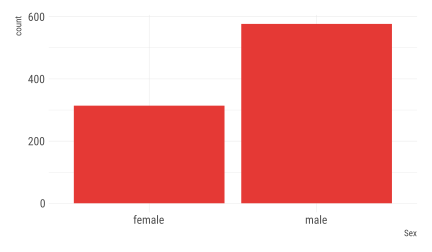
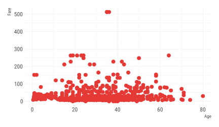
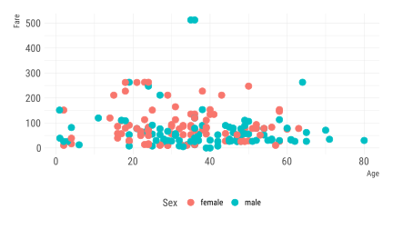
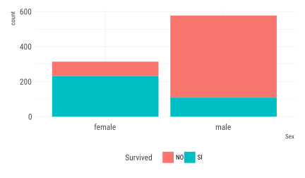

t|1i|2d|3y|1
d|1a|2t|1a|1
Joshua Kunst + Pachá, Mayo 2018
¿Qué haremos?
- Explorar, graficar y agregar datos de los sobrevivientes del Titanic
- Mediante ejemplos sentar las bases para trabajar mejor
- Perder el miedo a R
Introducción
Introducción
La idea es adentrarnos en el siguiente flujo de datos:

Antes de comenzar
No puedo explicar sin entender
El Análisis Exploratorio y la Estadística Descriptiva son parte clave para el entendimiento
Escuchar lo que los datos nos hablan
Conceptos
- Una variable es una cantidad, que puede ser medida: estatura, magnitud de un sismo, velocidad de un huracán, etc
- Un valor es un estado de la variable cuando se mide: 1.20 metros, 8° Richter
- Una observación o caso es un conjunto de mediciones -no de la misma variable necesariamente- pero si en un mismo instante y a un mismo objeto.
Conceptos
- Datos tabulados es un conjunto de valores cada uno asociado a una variable y una observación

Conceptos
Análisis Exploratorio de Datos
- Generar preguntas acerca de los datos
- Buscar respuestas visualizando, transformando los datos
- Hacer nuevas preguntas a partir de lo aprendido
Generar conocimiento
Sobrevivientes del titanic
Sobrevivientes del titanic
- Exploraremos los datos del Titanic
- Cada observación es una persona
- Cada variable es una característica tales como nombre, edad y sobrevivencia.
Manipulación de datos
Ejercicio 1
- Carga el Tidyverse
- Carga los datos
- Explora las primeras observaciones de los datos
- ¿Qué significan estas variables?
- Resume los datos del Titanic (2 formas de hacerlo)
- ¿Se mantienen los resultados si antes de resumir quitas las observaciones con entradas nulas?
Solución Ejercicio 1
Solución Ejercicio 1
## # A tibble: 891 x 12
## PassengerId Survived Pclass Name Sex Age SibSp Parch Ticket Fare
## <int> <int> <int> <chr> <chr> <dbl> <int> <int> <chr> <dbl>
## 1 1 0 3 Braun~ male 22.0 1 0 A/5 2~ 7.25
## 2 2 1 1 Cumin~ fema~ 38.0 1 0 PC 17~ 71.3
## 3 3 1 3 Heikk~ fema~ 26.0 0 0 STON/~ 7.92
## 4 4 1 1 Futre~ fema~ 35.0 1 0 113803 53.1
## 5 5 0 3 Allen~ male 35.0 0 0 373450 8.05
## 6 6 0 3 Moran~ male NA 0 0 330877 8.46
## 7 7 0 1 McCar~ male 54.0 0 0 17463 51.9
## 8 8 0 3 Palss~ male 2.00 3 1 349909 21.1
## 9 9 1 3 Johns~ fema~ 27.0 0 2 347742 11.1
## 10 10 1 2 Nasse~ fema~ 14.0 1 0 237736 30.1
## # ... with 881 more rows, and 2 more variables: Cabin <chr>,
## # Embarked <chr>Solución Ejercicio 1
## PassengerId Survived Pclass Name
## Min. : 1.0 Min. :0.0000 Min. :1.000 Length:891
## 1st Qu.:223.5 1st Qu.:0.0000 1st Qu.:2.000 Class :character
## Median :446.0 Median :0.0000 Median :3.000 Mode :character
## Mean :446.0 Mean :0.3838 Mean :2.309
## 3rd Qu.:668.5 3rd Qu.:1.0000 3rd Qu.:3.000
## Max. :891.0 Max. :1.0000 Max. :3.000
##
## Sex Age SibSp Parch
## Length:891 Min. : 0.42 Min. :0.000 Min. :0.0000
## Class :character 1st Qu.:20.12 1st Qu.:0.000 1st Qu.:0.0000
## Mode :character Median :28.00 Median :0.000 Median :0.0000
## Mean :29.70 Mean :0.523 Mean :0.3816
## 3rd Qu.:38.00 3rd Qu.:1.000 3rd Qu.:0.0000
## Max. :80.00 Max. :8.000 Max. :6.0000
## NA's :177
## Ticket Fare Cabin Embarked
## Length:891 Min. : 0.00 Length:891 Length:891
## Class :character 1st Qu.: 7.91 Class :character Class :character
## Mode :character Median : 14.45 Mode :character Mode :character
## Mean : 32.20
## 3rd Qu.: 31.00
## Max. :512.33
## Solución Ejercicio 1
## PassengerId Survived Pclass Name
## Min. : 1.0 Min. :0.0000 Min. :1.000 Length:891
## 1st Qu.:223.5 1st Qu.:0.0000 1st Qu.:2.000 Class :character
## Median :446.0 Median :0.0000 Median :3.000 Mode :character
## Mean :446.0 Mean :0.3838 Mean :2.309
## 3rd Qu.:668.5 3rd Qu.:1.0000 3rd Qu.:3.000
## Max. :891.0 Max. :1.0000 Max. :3.000
##
## Sex Age SibSp Parch
## Length:891 Min. : 0.42 Min. :0.000 Min. :0.0000
## Class :character 1st Qu.:20.12 1st Qu.:0.000 1st Qu.:0.0000
## Mode :character Median :28.00 Median :0.000 Median :0.0000
## Mean :29.70 Mean :0.523 Mean :0.3816
## 3rd Qu.:38.00 3rd Qu.:1.000 3rd Qu.:0.0000
## Max. :80.00 Max. :8.000 Max. :6.0000
## NA's :177
## Ticket Fare Cabin Embarked
## Length:891 Min. : 0.00 Length:891 Length:891
## Class :character 1st Qu.: 7.91 Class :character Class :character
## Mode :character Median : 14.45 Mode :character Mode :character
## Mean : 32.20
## 3rd Qu.: 31.00
## Max. :512.33
## Solución Ejercicio 1
# Resume los datos del Titanic quitando las observaciones con entradas nulas
passengers %>%
drop_na() %>%
summary()## PassengerId Survived Pclass Name
## Min. : 2.0 Min. :0.0000 Min. :1.000 Length:183
## 1st Qu.:263.5 1st Qu.:0.0000 1st Qu.:1.000 Class :character
## Median :457.0 Median :1.0000 Median :1.000 Mode :character
## Mean :455.4 Mean :0.6721 Mean :1.191
## 3rd Qu.:676.0 3rd Qu.:1.0000 3rd Qu.:1.000
## Max. :890.0 Max. :1.0000 Max. :3.000
## Sex Age SibSp Parch
## Length:183 Min. : 0.92 Min. :0.0000 Min. :0.0000
## Class :character 1st Qu.:24.00 1st Qu.:0.0000 1st Qu.:0.0000
## Mode :character Median :36.00 Median :0.0000 Median :0.0000
## Mean :35.67 Mean :0.4645 Mean :0.4754
## 3rd Qu.:47.50 3rd Qu.:1.0000 3rd Qu.:1.0000
## Max. :80.00 Max. :3.0000 Max. :4.0000
## Ticket Fare Cabin Embarked
## Length:183 Min. : 0.00 Length:183 Length:183
## Class :character 1st Qu.: 29.70 Class :character Class :character
## Mode :character Median : 57.00 Mode :character Mode :character
## Mean : 78.68
## 3rd Qu.: 90.00
## Max. :512.33Recapitulando
- Leíste los datos y los revisaste
- Aprendiste algo acerca del operador
%>%
Ejercicio 2: Uso de filter
- Filtra para dejar sólo las observaciones que corresponden a hombres
Solución Ejercicio 2
# Filtra para dejar sólo las observaciones que corresponden a hombres
passengers %>%
filter(Sex == "male")## # A tibble: 577 x 12
## PassengerId Survived Pclass Name Sex Age SibSp Parch Ticket Fare
## <int> <int> <int> <chr> <chr> <dbl> <int> <int> <chr> <dbl>
## 1 1 0 3 Braun~ male 22.0 1 0 A/5 2~ 7.25
## 2 5 0 3 Allen~ male 35.0 0 0 373450 8.05
## 3 6 0 3 Moran~ male NA 0 0 330877 8.46
## 4 7 0 1 McCar~ male 54.0 0 0 17463 51.9
## 5 8 0 3 Palss~ male 2.00 3 1 349909 21.1
## 6 13 0 3 Saund~ male 20.0 0 0 A/5. ~ 8.05
## 7 14 0 3 Ander~ male 39.0 1 5 347082 31.3
## 8 17 0 3 Rice,~ male 2.00 4 1 382652 29.1
## 9 18 1 2 Willi~ male NA 0 0 244373 13.0
## 10 21 0 2 Fynne~ male 35.0 0 0 239865 26.0
## # ... with 567 more rows, and 2 more variables: Cabin <chr>,
## # Embarked <chr>Solución Ejercicio 2
- El código de
dplyrse puede leer como una frase: toma los datos y luego (%>%) filtra de acuerdo a la condición “es de sexo masculino” - Lo que acabas de hacer no altera los datos originales
filter(Sex = "male")es un error común
Ejercicio 3: Uso de filter
- Filtra para dejar sólo las observaciones que corresponden a mujeres
Solución Ejercicio 3
# Filtra para dejar sólo las observaciones que corresponden a mujeres
passengers %>%
filter(Sex == "female")## # A tibble: 314 x 12
## PassengerId Survived Pclass Name Sex Age SibSp Parch Ticket Fare
## <int> <int> <int> <chr> <chr> <dbl> <int> <int> <chr> <dbl>
## 1 2 1 1 Cumin~ fema~ 38.0 1 0 PC 17~ 71.3
## 2 3 1 3 Heikk~ fema~ 26.0 0 0 STON/~ 7.92
## 3 4 1 1 Futre~ fema~ 35.0 1 0 113803 53.1
## 4 9 1 3 Johns~ fema~ 27.0 0 2 347742 11.1
## 5 10 1 2 Nasse~ fema~ 14.0 1 0 237736 30.1
## 6 11 1 3 Sands~ fema~ 4.00 1 1 PP 95~ 16.7
## 7 12 1 1 Bonne~ fema~ 58.0 0 0 113783 26.6
## 8 15 0 3 Vestr~ fema~ 14.0 0 0 350406 7.85
## 9 16 1 2 Hewle~ fema~ 55.0 0 0 248706 16.0
## 10 19 0 3 Vande~ fema~ 31.0 1 0 345763 18.0
## # ... with 304 more rows, and 2 more variables: Cabin <chr>,
## # Embarked <chr>Ejercicio 4: Uso de arrange
- Ordena las observaciones usando
arrangede manera creciente de acuerdo al valor de los pasajes (Fare)
Solución Ejercicio 4
## # A tibble: 891 x 12
## PassengerId Survived Pclass Name Sex Age SibSp Parch Ticket Fare
## <int> <int> <int> <chr> <chr> <dbl> <int> <int> <chr> <dbl>
## 1 180 0 3 Leona~ male 36.0 0 0 LINE 0
## 2 264 0 1 Harri~ male 40.0 0 0 112059 0
## 3 272 1 3 Tornq~ male 25.0 0 0 LINE 0
## 4 278 0 2 "Park~ male NA 0 0 239853 0
## 5 303 0 3 Johns~ male 19.0 0 0 LINE 0
## 6 414 0 2 Cunni~ male NA 0 0 239853 0
## 7 467 0 2 Campb~ male NA 0 0 239853 0
## 8 482 0 2 "Fros~ male NA 0 0 239854 0
## 9 598 0 3 Johns~ male 49.0 0 0 LINE 0
## 10 634 0 1 Parr,~ male NA 0 0 112052 0
## # ... with 881 more rows, and 2 more variables: Cabin <chr>,
## # Embarked <chr>Ejercicio 5: Uso de arrange
- Ordena las observaciones usando
arrangeydescde manera decreciente de acuerdo al valor de los pasajes (Fare)
Solución Ejercicio 5
## # A tibble: 891 x 12
## PassengerId Survived Pclass Name Sex Age SibSp Parch Ticket Fare
## <int> <int> <int> <chr> <chr> <dbl> <int> <int> <chr> <dbl>
## 1 259 1 1 Ward,~ fema~ 35.0 0 0 PC 17~ 512
## 2 680 1 1 Carde~ male 36.0 0 1 PC 17~ 512
## 3 738 1 1 Lesur~ male 35.0 0 0 PC 17~ 512
## 4 28 0 1 Fortu~ male 19.0 3 2 19950 263
## 5 89 1 1 Fortu~ fema~ 23.0 3 2 19950 263
## 6 342 1 1 Fortu~ fema~ 24.0 3 2 19950 263
## 7 439 0 1 Fortu~ male 64.0 1 4 19950 263
## 8 312 1 1 Ryers~ fema~ 18.0 2 2 PC 17~ 262
## 9 743 1 1 "Ryer~ fema~ 21.0 2 2 PC 17~ 262
## 10 119 0 1 Baxte~ male 24.0 0 1 PC 17~ 248
## # ... with 881 more rows, and 2 more variables: Cabin <chr>,
## # Embarked <chr>Ejercicio 6: Uso de mutate
- La variable
Parchcorresponde al número de padres e hijos - La variable
SibSpcorresponde al número de hermanos y esposas - Usa
mutatepara combinar ambas variables y crear la variableFamSize
Solución Ejercicio 6
## # A tibble: 891 x 13
## PassengerId Survived Pclass Name Sex Age SibSp Parch Ticket Fare
## <int> <int> <int> <chr> <chr> <dbl> <int> <int> <chr> <dbl>
## 1 1 0 3 Braun~ male 22.0 1 0 A/5 2~ 7.25
## 2 2 1 1 Cumin~ fema~ 38.0 1 0 PC 17~ 71.3
## 3 3 1 3 Heikk~ fema~ 26.0 0 0 STON/~ 7.92
## 4 4 1 1 Futre~ fema~ 35.0 1 0 113803 53.1
## 5 5 0 3 Allen~ male 35.0 0 0 373450 8.05
## 6 6 0 3 Moran~ male NA 0 0 330877 8.46
## 7 7 0 1 McCar~ male 54.0 0 0 17463 51.9
## 8 8 0 3 Palss~ male 2.00 3 1 349909 21.1
## 9 9 1 3 Johns~ fema~ 27.0 0 2 347742 11.1
## 10 10 1 2 Nasse~ fema~ 14.0 1 0 237736 30.1
## # ... with 881 more rows, and 3 more variables: Cabin <chr>,
## # Embarked <chr>, FamSize <int>Acerca de mutate
mutate()se puede usar para crear nuevas columnas pero también para modificar columnas existentes- e.g. si tengo una variable
pesoexpresada en kilos puedo ejecutarmutate(peso = peso / 1000)para pasar a toneladas
Ejercicio 7: Uso de mutate
- ¿Es posible que las familias más numerosas tengan una menor probabilidad de sobrevivir?
- Para corroborar esto crea la nueva variable
FamSizecomo la suma deParchySibSpcomo ya se hizo y luego ordena descendentemente porFamSize
Solución Ejercicio 7
# Crea la columna FamSize (tamaño de la familia)
# Ordena descendentemente por FamSize
passengers %>%
mutate(FamSize = Parch + SibSp) %>%
arrange(desc(FamSize))## # A tibble: 891 x 13
## PassengerId Survived Pclass Name Sex Age SibSp Parch Ticket Fare
## <int> <int> <int> <chr> <chr> <dbl> <int> <int> <chr> <dbl>
## 1 160 0 3 Sage,~ male NA 8 2 CA. 2~ 69.6
## 2 181 0 3 Sage,~ fema~ NA 8 2 CA. 2~ 69.6
## 3 202 0 3 Sage,~ male NA 8 2 CA. 2~ 69.6
## 4 325 0 3 Sage,~ male NA 8 2 CA. 2~ 69.6
## 5 793 0 3 Sage,~ fema~ NA 8 2 CA. 2~ 69.6
## 6 847 0 3 Sage,~ male NA 8 2 CA. 2~ 69.6
## 7 864 0 3 "Sage~ fema~ NA 8 2 CA. 2~ 69.6
## 8 60 0 3 Goodw~ male 11.0 5 2 CA 21~ 46.9
## 9 72 0 3 Goodw~ fema~ 16.0 5 2 CA 21~ 46.9
## 10 387 0 3 Goodw~ male 1.00 5 2 CA 21~ 46.9
## # ... with 881 more rows, and 3 more variables: Cabin <chr>,
## # Embarked <chr>, FamSize <int>Ejercicio 8: Uso de mutate
- Como los ceros y unos no son muy informativos, transforma los valores de
Surviveda “SI” y “NO” - Crea una nueva tabla
Solución Ejercicio 8
# Transforma Survived en valores "SI" y "NO" (nueva tabla)
passengers1 <- passengers %>%
mutate(Survived = ifelse(Survived == 0, "NO", "SI"))
passengers1## # A tibble: 891 x 12
## PassengerId Survived Pclass Name Sex Age SibSp Parch Ticket Fare
## <int> <chr> <int> <chr> <chr> <dbl> <int> <int> <chr> <dbl>
## 1 1 NO 3 Braun~ male 22.0 1 0 A/5 2~ 7.25
## 2 2 SI 1 Cumin~ fema~ 38.0 1 0 PC 17~ 71.3
## 3 3 SI 3 Heikk~ fema~ 26.0 0 0 STON/~ 7.92
## 4 4 SI 1 Futre~ fema~ 35.0 1 0 113803 53.1
## 5 5 NO 3 Allen~ male 35.0 0 0 373450 8.05
## 6 6 NO 3 Moran~ male NA 0 0 330877 8.46
## 7 7 NO 1 McCar~ male 54.0 0 0 17463 51.9
## 8 8 NO 3 Palss~ male 2.00 3 1 349909 21.1
## 9 9 SI 3 Johns~ fema~ 27.0 0 2 347742 11.1
## 10 10 SI 2 Nasse~ fema~ 14.0 1 0 237736 30.1
## # ... with 881 more rows, and 2 more variables: Cabin <chr>,
## # Embarked <chr>Recapitulando
- Leíste los datos y los revisaste
- Aprendiste algo acerca del operador
%>% - Ahora puedes usar
dplyrpara manipular datos: filtrar, ordenar y mutar
Graficar datos
Uso de ggplot2
Para graficar usando ggplot2 debes especificar tres elementos:
- Datos
- Estética (e.g cuál variable va en el eje x)
- Capas (e.g. gráfico de barras, puntos, etc)
Ejercicio 9: Uso de geom_bar
Crea un gráfico de barras de la variable sexo para dar cuenta de cuántos hombres y mujeres iban a bordo del Titanic.
Solución Ejercicio 9

Ejercicio 10: Uso de geom_point
¿Se correlaciona la edad de los pasajeros con el precio del pasaje?
Solución Ejercicio 10
# Gráfico de puntos de edad vs valor del pasaje
ggplot(passengers, aes(x = Age, y = Fare)) +
geom_point()
Solución Ejercicio 10
- El código de ggplot2 también se puede leer como una frase al igual que dplyr
- “Tomo los datos del Titanic, llevo Age al eje x y Fare al eje y, luego agrego los datos en forma de puntos”
Ejercicio 11: Uso de aes
Agrega color por sexo al gráfico anterior para ver si acaso se observa una correlación entre sexo, edad y valor del pasaje:
Solución Ejercicio 11
# Gráfico de puntos de edad vs valor del pasaje coloreado por sexo
ggplot(passengers %>% drop_na(), aes(x = Age, y = Fare, color = Sex)) +
geom_point()
Ejercicio 12: Uso de facet_grid
¿Cómo lo harías para incorporar la variable sobrevivencia al gráfico anterior y ver si acaso se observa una tendencia?
Solución Ejercicio 12
Ejercicio 13: Uso de geom_bar
Ahora construye un gráfico de barras que se cuenta de la variable sexo, esta vez separado por sobrevivencia.
Solución Ejercicio 13
# Gráfico de barras de pasajeros por sexo separado por sobrevivencia
ggplot(passengers1, aes(x = Sex, fill = Survived)) +
geom_bar()
Recapitulando
- Leíste los datos y los revisaste
- Aprendiste algo acerca del operador
%>% - Ahora puedes usar
dplyrpara manipular datos: filtrar, ordenar y mutar - Aprendiste lo básico de
ggplot2.
Resumir y agregar datos
Ejercicio 14: Uso de summarise
Usa summarise para encontrar la media del valor del pasaje.
Solución Ejercicio 14
## # A tibble: 1 x 1
## meanFare
## <dbl>
## 1 32.2Ejercicio 15: Uso de summarise
Usa summarise para encontrar la mediana del valor del pasaje.
Solución Ejercicio 15
## # A tibble: 1 x 1
## medianFare
## <dbl>
## 1 14.5Ejercicio 16: Uso de summarise
Usa filter y summarise para encontrar la mediana del valor del pasaje de los hombres.
Solución Ejercicio 16
# Calcula la mediana del valor del pasaje de los hombres
passengers %>%
filter(Sex == "male") %>%
summarise(meanFare = mean(Fare))## # A tibble: 1 x 1
## meanFare
## <dbl>
## 1 25.5Ejercicio 17: Uso de summarise
Usa filter y summarise para encontrar la mediana del valor del pasaje de las mujeres.
Solución Ejercicio 17
# Calcula la mediana del valor del pasaje de las mujeres
passengers %>%
filter(Sex == "female") %>%
summarise(meanFare = mean(Fare))## # A tibble: 1 x 1
## meanFare
## <dbl>
## 1 44.5Ejercicio 18: Uso de summarise
Usa filter y summarise para encontrar la media del valor del pasaje de las mujeres y cuántas mujeres sobrevivieron.
Solución Ejercicio 18
# Calcula la media del valor del pasaje de las mujeres y cuantas mujeres sobrevivieron
passengers %>%
filter(Sex == "female") %>%
summarise(meanFare = mean(Fare), numSurv = sum(Survived))## # A tibble: 1 x 2
## meanFare numSurv
## <dbl> <int>
## 1 44.5 233Ejercicio 19: Uso de group_by
Usa group_by y summarise para encontrar la media del valor del pasaje y el número de sobrevivientes como función del sexo.
Solución Ejercicio 19
# Calcula la media del valor del pasaje y el numero de sobrevivientes agrupado por sexo
passengers %>%
group_by(Sex) %>%
summarise(meanFare = mean(Fare), numSurv = sum(Survived))## # A tibble: 2 x 3
## Sex meanFare numSurv
## <chr> <dbl> <int>
## 1 female 44.5 233
## 2 male 25.5 109Ejercicio 20: Uso de group_by
Usa group_by y summarise para encontrar la mediana del valor del pasaje y el número de sobrevivientes como función del sexo.
Solución Ejercicio 20
# Calcula la media del valor del pasaje y el numero de sobrevivientes agrupado por sexo
passengers %>%
group_by(Sex) %>%
summarise(meanFare = mean(Fare), numSurv = sum(Survived))## # A tibble: 2 x 3
## Sex meanFare numSurv
## <chr> <dbl> <int>
## 1 female 44.5 233
## 2 male 25.5 109Recapitulando
- Leíste los datos y los revisaste
- Aprendiste algo acerca del operador
%>% - Ahora puedes usar
dplyrpara manipular datos: filtrar, ordenar y mutar - Aprendiste lo básico de
ggplot2. - Aprendiste a resumir datos teniendo en cuenta múltiples dimensiones tales como sexo, edad, etc